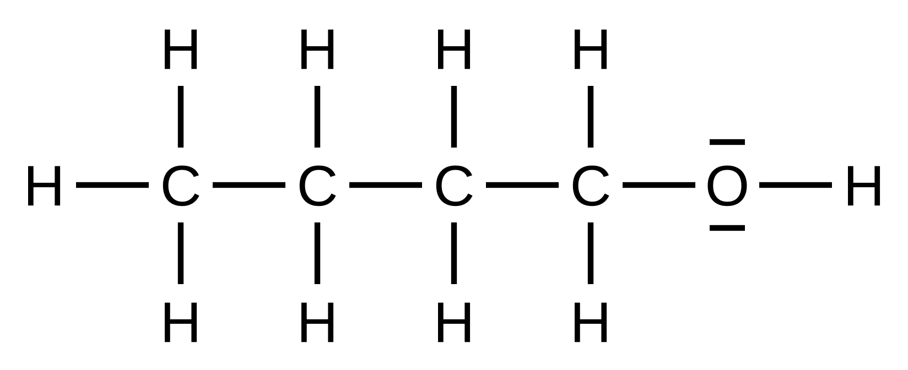
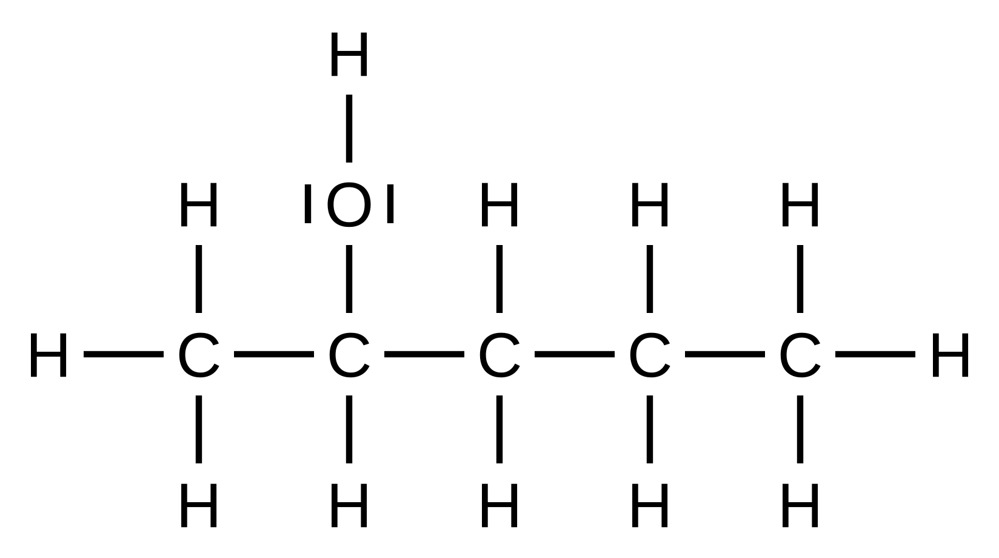
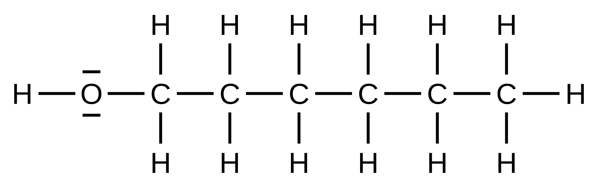
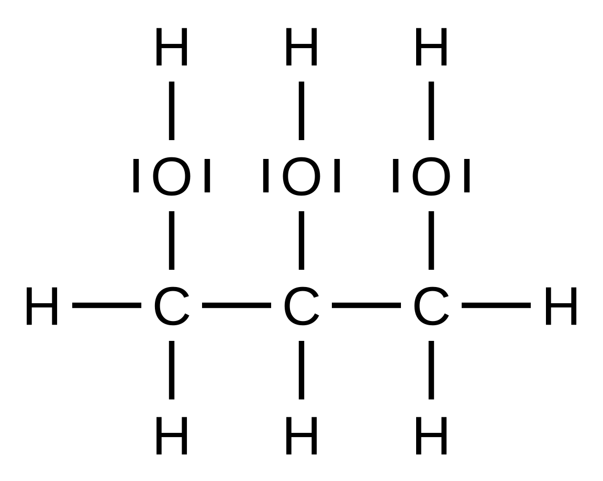

So nutzen Sie die Hilfen: Versuchen Sie es erst allein. Öffnen Sie dann Hilfe 1, danach Hilfe 2. Die Lösung dient zur Kontrolle – vergleichen Sie sie mit Ihrer eigenen Antwort und verbessern Sie diese.
Aufgabe 1: Homologe Reihe der Alkanole
Ergänzen Sie die homologe Reihe und leiten Sie die allgemeine Summenformel ab!
Hilfe 1
Schreiben Sie die Summenformel als Alkylrest + OH: Methanol CH₃OH, Ethanol C₂H₅OH. Wie verändert sich der Rest von Glied zu Glied?
Hilfe 2
Der Rest ist ein Alkan mit einem H-Atom weniger: CnH2n+2 → CnH2n+1.
Lösung (erst nach eigenem Versuch öffnen!)
C₃H₇OH, C₄H₉OH, C₅H₁₁OH, C₆H₁₃OH · allgemein: CnH2n+1OH
Aufgabe 2: Alkanole benennen
Benennen Sie die abgebildeten Alkanole!
Hilfe 1
1. C-Atome zählen → Alkan-Name. 2. Endung -ol anhängen.
Hilfe 2
Nummerieren Sie so, dass das C-Atom mit der OH-Gruppe die kleinste Nummer bekommt. Zwei OH-Gruppen: -diol mit beiden Nummern.
Lösung (erst nach eigenem Versuch öffnen!)
Propan-2-ol · Butan-2-ol · Pentan-3-ol · Ethan-1,2-diol
Aufgabe 3: Strukturformeln zeichnen
Zeichnen Sie die Strukturformeln! Wählen Sie das Molekül, bei dem Sie Hilfe brauchen.
So lesen Sie den Namen
Der Name verrät: Stammname = Kettenlänge, Zahl = C-Atom mit der Hydroxygruppe, -ol = Alkohol.
a) Butan-1-ol
Hilfe 1
4 C-Atome, OH am ersten C-Atom (Kettenende).
Hilfe 2
Kette zeichnen, OH-Gruppe(n) an das C-Atom mit der Positionsnummer setzen (C–O–H mit zwei freien Elektronenpaaren am O-Atom), dann H-Atome ergänzen, bis jedes C-Atom vier Bindungsstriche hat.
Lösung

b) Pentan-2-ol
Hilfe 1
5 C-Atome, OH am zweiten C-Atom.
Hilfe 2
Kette zeichnen, OH-Gruppe(n) an das C-Atom mit der Positionsnummer setzen (C–O–H mit zwei freien Elektronenpaaren am O-Atom), dann H-Atome ergänzen, bis jedes C-Atom vier Bindungsstriche hat.
Lösung

c) Hexan-1-ol
Hilfe 1
6 C-Atome, OH am Kettenende.
Hilfe 2
Kette zeichnen, OH-Gruppe(n) an das C-Atom mit der Positionsnummer setzen (C–O–H mit zwei freien Elektronenpaaren am O-Atom), dann H-Atome ergänzen, bis jedes C-Atom vier Bindungsstriche hat.
Lösung

d) ★ Propan-1,2,3-triol
Hilfe 1
3 C-Atome, an jedem C-Atom eine OH-Gruppe.
Hilfe 2
Kette zeichnen, OH-Gruppe(n) an das C-Atom mit der Positionsnummer setzen (C–O–H mit zwei freien Elektronenpaaren am O-Atom), dann H-Atome ergänzen, bis jedes C-Atom vier Bindungsstriche hat.
Lösung

Aufgabe 4: Fehler finden
Erklären Sie den Fehler und nennen Sie die richtigen Namen!
Hilfe 1
Zeichnen Sie Propan-3-ol und nummerieren Sie die Kette von der anderen Seite. Welche Nummer erhält das C-Atom mit der OH-Gruppe jetzt?
Lösung (erst nach eigenem Versuch öffnen!)
Falsche Nummerierungsrichtung – das C-Atom mit der Hydroxygruppe muss die kleinstmögliche Nummer erhalten: Propan-1-ol, Butan-2-ol.
Aufgabe 5: Verbrennung von Ethanol
Formulieren Sie die Summenformelgleichung!
Hilfe 1
Produkte wie bei den Alkanen: CO₂ und H₂O. Ethanol: C₂H₅OH enthält 6 H-Atome und schon 1 O-Atom!
Hilfe 2
2 CO₂ + 3 H₂O → 7 O-Atome rechts. 1 O-Atom bringt Ethanol mit → 6 O-Atome = 3 O₂.
Lösung (erst nach eigenem Versuch öffnen!)
C₂H₅OH + 3 O₂ → 2 CO₂ + 3 H₂O ; ΔER < 0
Aufgabe 6 (★ Wahl): Verbrennung von Methanol
Formulieren Sie die Summenformelgleichung!
Hilfe 1
CH₃OH: 1 C, 4 H, 1 O. Rechts: 1 CO₂ + 2 H₂O = 4 O-Atome, 1 davon aus Methanol → 3 O-Atome = 1½ O₂ → verdoppeln.
Lösung (erst nach eigenem Versuch öffnen!)
2 CH₃OH + 3 O₂ → 2 CO₂ + 4 H₂O ; ΔER < 0
📱 Weiter üben: App „BioChemie FOS BOS Würzburg“ → Molekulare Stoffe → Kohlenwasserstoffe und Alkohole